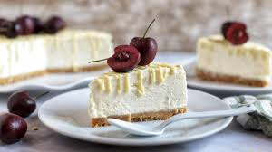

cheesecake

Description
A cheesecake is a rich, creamy dessert with a smooth texture that combines cheese, sugar, and eggs. Its base often consists of a crust or base made from crushed cookies, graham crackers, or pastry. The cheese used is typically cream cheese, but other soft cheeses can also be used. Cheesecakes can be either baked, which gives them a dense and smooth texture, or unbaked, resulting in a lighter and more mousse-like texture. They can be flavored in various ways, such as with vanilla, lemon, or chocolate, and are often topped with fruit, chocolate, or whipped cream.
The Recipies
For the crust
Instrucions
- Preheat your ovento 350°F (175°C). Grease a 9-inch springform pan lightly with butter or non-stick spray.
- Prepare the crust: In a medium bowl, mix together the graham cracker crumbs, 1/4 cup sugar, and melted butter until well combined. Press the mixture into the bottom of the prepared springform pan, and slightly up the sides. Bake in the preheated oven for 10 minutes, then remove and let cool while preparing the filling.
- Make the filling:In a large bowl, beat the softened cream cheese and 1 1/4 cups sugar with an electric mixer until smooth and creamy. Mix in the sour cream and vanilla extract until well incorporated. Add the eggs one at a time, beating just enough to blend in after each addition. Pour the filling over the prepared crust.
- Bake the cheesecake:Place the springform pan on a baking sheet and bake in the preheated oven for 55 minutes, or until the edges are set but the center still moves slightly. Avoid opening the oven door to prevent cracks.
- Cool and chill:Turn off the oven, crack open the oven door, and let the cheesecake cool inside the oven for 1 hour to prevent sudden temperature changes that can cause cracking. After cooling, remove from the oven, and refrigerate for at least 4 hours, preferably overnight.
- Serve:Before serving, run a knife around the edges of the pan to loosen the cheesecake. Release the sides of the springform pan. Top the cheesecake with fresh berries and a dollop of whipped cream, if desired.